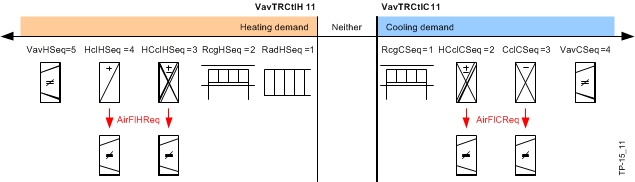
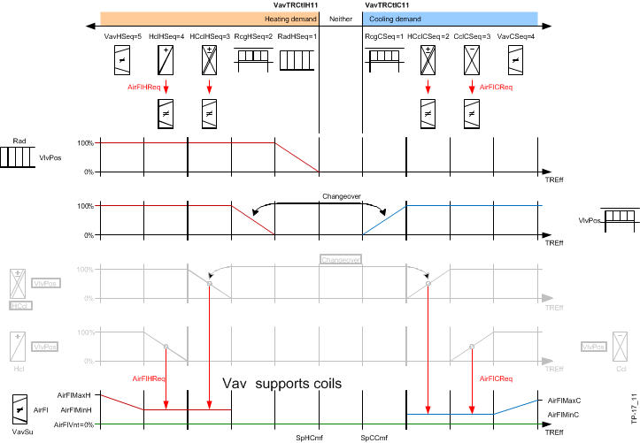
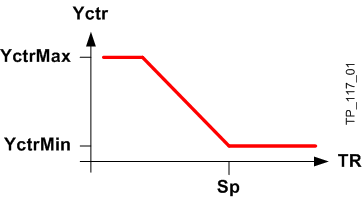
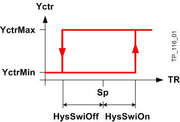
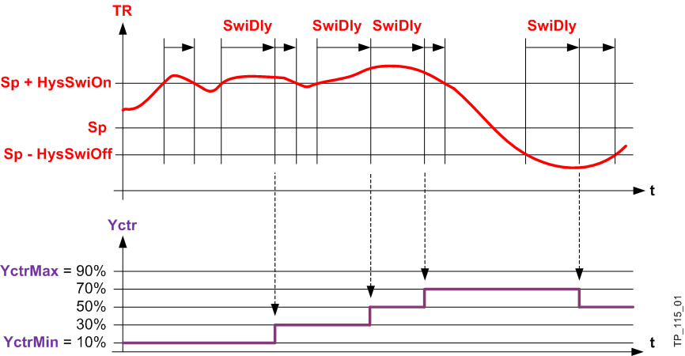

控制序列的序列
各种加热和冷却装置必须按正确的顺序进行控制。下面，我们使用复杂的 VAV 房间应用程序作为示例来考虑这个概念。
可以在温度控制（VavTRCtlC11、VavTRCtlH11、VavTCasCtlC11、VavTCasCtlH11）中为每个加热/cooling 元件（在ConfigExtension 中）设置序列。可为 Fnc 和 Fpb 设置并行和串行风扇模式。
该序列始终在加热和冷却序列之间的中间开始。
然后根据实际值和设定值控制设备的冷却或加热顺序。如果设备当前不可用（故障、停止服务），则立即控制下一个序列元素。

加热侧的第一个序列元件是散热器。
如果 PID 控制器在 100% 关闭，序列协调器将释放天花板加热作为下一个元件，然后释放加热线圈。 VAV 框设置为发生空气交换的最小体积流量。如果即使在加热盘管阀完全打开后房间仍继续需要热量，则体积流量会不断增加。
如果室温达到或超过设定点，PID 控制器会根据控制信号调用序列。如果温度升高，则控制冷却顺序的装置。
工厂运行模式 (PltOpMod) 的更改会直接影响设备设定值。
Sequence

除了每个加热/cooling 元素的顺序之外，还在 ConfigExtension 中为各种设备操作模式建立了以下内容：
- What devices are used: Radiant surfaces / air handling
- Control type: Modulating / 2-point
设备工作模式 | 辐射表面/空气处理 | 调制/2点寄存器 | 调制/2点辐射面 |
|---|---|---|---|
舒适 | X | X | X |
预舒适 | X | X | X |
经济 | X | X | X |
保护 | X | X | X |
热身 | X | X | X |
冷却 | X | X | X |
免费冷却 | X |
|
|
Control type
来自 AF (BACnet) 的控制命令始终标准化为 0...100%。可以在输出处限制最小值和最大值，并选择用于调制、2 点和 1...10 级之间的控制
PID 控制参数和滞后值是属于温度控制器 AFs 的 BACnet 控制器对象的属性。
在 0...100% 范围内调节控制 （PID 控制器） |  |
2 位控制 |  |
分级控制（1...10 级） | % 中的输出命令映射到级数。 下面描述了具有 4 个阶段和 min/max 限制的示例。 |
